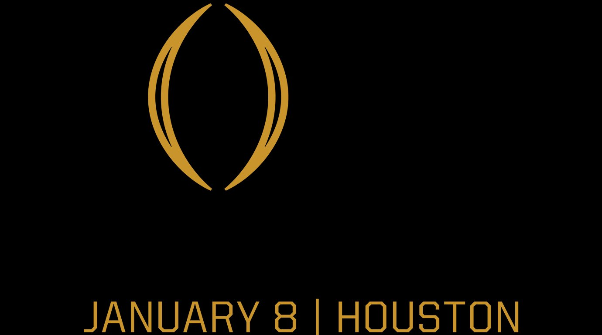

Sportscaster · Career Coach · Motivational Speaker
Samples of calls from recent games and major events.

Featured in the Washington Post, Seattle Times, The Athletic, and more.
Read Press Coverage →What fans, peers, and the media are saying about the Voice of the Huskies.
Read What They're Saying →Coaching, insights, and real-world advice to make your dream job in play-by-play broadcasting come true, from people doing it at the highest level.
Learn More →The smartest way to call a game. The future of play-by-play prep and in-game analysis. Stay tuned.